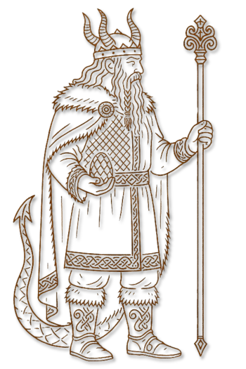

II · Pantheon Archivblatt 02
Der Nordische Pantheon
Die alten Nordgötter
Der Nordkult vereint lichte und dunkle Aspekte in neun Hauptgöttern. Runen, Überlieferung und die Deutung ihrer Priester prägen den Glauben der Nordmänner.

Gestalten dieser Überlieferung
Götterkreis & Gestalten
Die Namen, Bildnisse und Aspektzuordnungen dieser Glaubensrichtung. Verweise führen zu den entsprechenden Überlieferungen im Glaubenscodex.
Die Hauptgötter
09Die Nebengötter
05Diese Spur verliert sich im Archiv.
Zu dieser Suche wurde kein Eintrag gefunden. Versucht einen anderen Namen oder öffnet wieder alle Kapitel.
Übersicht
Der Nord Pantheon ist eine Religion, die, wie viele andere, ihre Wurzeln im „alten Pantheon“ hat, das ursprünglich von den Druiden an die Menschheit überliefert wurde. Im Laufe der Jahrtausende, durch Isolation und den schwindenden Einfluss der Druiden, hat sich der Nord Pantheon jedoch stark von seinen Ursprüngen entfernt. Diese Abkehr führte dazu, dass die ursprünglichen Lehren und Interpretationen der Götter verfälscht und verwaschen wurden, ähnlich wie es auch bei anderen „fehlgeleiteten“ Pantheons der Fall ist.
Während die Nordmänner im Grunde dieselben Götter verehren wie die Menschen in Aldrimar oder die Gläubigen der Alerischen Kirche, sind die Interpretationen im Norden oft radikal anders. Ein Beispiel hierfür ist die unterschiedliche Auffassung des Gottes Balthor, der im Norden eine andere, oftmals finstere und kriegerische Bedeutung erhält als in den südlichen Regionen Cenyr und Aldrimar. Obwohl es unter den Nordmännern noch Anhänger gibt, die eine „richtige“ Interpretation der Götter bewahren, tendiert die Mehrheit dazu, sich auf eher negative oder düstere Eigenschaften der Götter zu konzentrieren und diese für ihre eigenen Zwecke zu definieren.
Diese Verzerrung des Glaubens hat dazu geführt, dass der Nord Pantheon und seine Praktiken von der Alerischen Kirche und anderen südlichen Gläubigen als Götzendienst und Blasphemie betrachtet werden. Für die Nordmänner jedoch verkörpert ihr Pantheon die rauen, unerbittlichen Kräfte ihrer Welt und spiegelt ihre eigene harte Existenz in den harschen Landschaften des Nordens wider. In ihren Augen sind die Götter des Nord Pantheon keine gütigen Beschützer, sondern mächtige, oft unberechenbare Wesen, deren Gunst man durch Opfer und Taten gewinnen oder besänftigen muss.
Hintergrund
Der Nordkult, wie er heute bekannt ist, entstand durch die zunehmende Entfremdung und Isolation der Nordmänner von den Druiden, die einst ihre Kultur geführt und begleitet hatten. Als diese weisheitsvollen Führer und Vermittler nach und nach verschwanden, verloren die Menschen des Nordens den direkten Zugang zu den ursprünglichen Lehren und Weisheiten. Mit dem Schwinden jener, die das Wissen der Götter überlieferten und korrigierend eingriffen, wenn es nötig war, begann die Religion sich zu verfälschen und entwickelte sich zu einem Pantheon, das zunehmend auf persönlichen Auslegungen und individuellen Interpretationen basierte.
Obwohl die Neun Götter des Nordkults im Wesentlichen dieselben sind, die auch von der Alerischen Kirche verehrt werden, hat die Isolation dazu geführt, dass ihre Bedeutungen und Eigenschaften im Norden oft anders verstanden und interpretiert werden. Diese Unterschiede sind nicht trivial: Während die Alerische Kirche eine kohärente, einheitliche Interpretation der Götter lehrt, haben die Nordmänner häufig eine verzerrte oder verworrene Auffassung von ihnen. Ein prägnantes Beispiel dafür ist die Figur des Streiters Balthor, der in der Alerischen Kirche als göttlicher Krieger verehrt wird, im Norden jedoch nicht selten mit dem Infernalen Gott Grimnar verwechselt wird, was zu einem deutlichen Bruch in der religiösen Praxis führt.
Diese fehlgeleiteten Interpretationen und die Verwechslung von göttlichen mit infernalen Kräften haben dazu beigetragen, dass der Nordkult von anderen, insbesondere von der Alerischen Kirche, als heidnisch oder sogar blasphemisch betrachtet wird. Dennoch bleibt er ein zentraler Bestandteil der nordischen Kultur, geprägt von den rauen Lebensbedingungen und der selbstbestimmten Natur der Nordmänner, die sich ihren eigenen Weg zu den Göttern bahnen.
Unterschiede
Ein wesentlicher Unterschied des Nordkults gegenüber anderen Glaubensrichtungen, wie der Alerischen Kirche, liegt in der fehlenden Unterscheidung zwischen den Göttlichen und den Infernalen . Im Nordkult existiert keine grundlegende Lehre, die die neun Göttlichen von ihren dunklen Gegenstücken, den neun Infernalen, trennt. Stattdessen werden alle Götter als eine einheitliche Gruppe wahrgenommen, ohne klare Trennung zwischen den guten und bösen Aspekten ihrer Natur.
Für die Nordmänner sind die Götter einfach nur Götter, die verschiedene Aspekte des Lebens und der Welt verkörpern. Diese Sichtweise führt dazu, dass oft keine klare Unterscheidung zwischen einem göttlichen Wesen und seinem infernalen Gegenstück getroffen wird. Ein Beispiel hierfür ist die Göttin Eiris , die in der Alerischen Kirche als die Verkörperung von Güte und Reinheit verehrt wird, während ihr infernales Gegenstück, Sanguine , als bösartig und verderbend gilt. Im Nordkult jedoch werden Eiris und Sanguine nicht als getrennte, gegensätzliche Wesen betrachtet. Stattdessen sieht man sie als Aspekte derselben göttlichen Kraft, die sowohl positive als auch negative Eigenschaften in sich vereint.
Diese Vermischung der göttlichen und infernalen Attribute führt dazu, dass der Nordkult oft als verworren und fehlgeleitet angesehen wird, insbesondere von jenen, die an die strikte Trennung zwischen Gut und Böse glauben, wie es in der Alerischen Kirche gelehrt wird. Für die Nordmänner jedoch ist diese dualistische Sichtweise nicht relevant; sie sehen die Götter als komplexe Wesen, die nicht einfach in gut und böse unterteilt werden können. Diese Perspektive spiegelt die raue und ambivalente Natur ihrer eigenen Welt wider, in der Licht und Dunkelheit oft untrennbar miteinander verbunden sind.
Ämter, Dienste und Berufungen
Tempelhierarchie
Die überlieferte Reihenfolge und die Aufgaben dieser Glaubensgemeinschaft. Öffnet einen Rang, um seine Beschreibung zu lesen.
01Göttermeister
Der Göttermeister ist der höchste Rang innerhalb des religiösen Systems. Er hat die ultimative Autorität über alle religiösen Angelegenheiten, leitet die höchsten Zeremonien und ist der Hauptverantwortliche für die Verbindung zwischen den Göttern und der Gemeinschaft. Er stellt sicher, dass die Lehren der Religion gewahrt bleiben und die religiösen Pflichten erfüllt werden.
02Weiser
Der Weise ist der Kopf eines der neun Stränge des Pantheons, die jeweils einem der neun primären Götter gewidmet sind. Als einer der neun Führer des Pantheons trägt der Weise die Verantwortung, die Lehren und den Willen seines Hauptgottes zu repräsentieren und zu leiten. Jeder Weise ist tief in die Mysterien und die spezifische Doktrin seines zugeordneten Gottes eingeweiht und sorgt dafür, dass die religiösen Praktiken und die Gemeinschaft im Einklang mit den göttlichen Prinzipien stehen. In dieser hohen Position koordiniert der Weise die Aktivitäten innerhalb seines Stranges, trifft wichtige Entscheidungen, die den gesamten Pantheon betreffen, und dient als Vermittler zwischen den Göttern und den Gläubigen. Der Weise hat die Aufgabe, den spirituellen Kurs seiner Gemeinschaft zu lenken und die göttlichen Orakel und Offenbarungen in die Praxis umzusetzen.
03Prophet
Der Prophet empfängt Visionen und Botschaften von den Göttern. Er ist für die Deutung und Weitergabe dieser göttlichen Offenbarungen verantwortlich und führt die Gemeinschaft basierend auf diesen Einsichten.
04Wortmann
Der Wortmann ist ein Meister der religiösen Sprache und Rhetorik. Er leitet bedeutende Zeremonien und spricht die heiligen Texte und Gebete. Seine Aufgabe ist es, die Worte der Götter mit Macht und Klarheit zu verkünden.
05Runenmeister
Der Runenmeister ist spezialisiert auf die Kunst der Runenmagie und -schrift. Er ist verantwortlich für das Erstellen und Interpretieren von Runen, die in Ritualen verwendet werden, und für die Bewahrung der magischen Traditionen der Religion.
06Erzähler
Der Erzähler ist der Bewahrer der Geschichten und Legenden des Glaubens. Er hat die Aufgabe, die Geschichte der Götter und der Mythologie der nordischen Religion zu übermitteln und in den Ritualen und Lehrstunden weiterzugeben.
07Hoher Priester
Der Hohe Priester hat umfangreiche Erfahrung und Verantwortung innerhalb des Tempels. Er überwacht die Priester, koordiniert wichtige Zeremonien und sorgt für die Einhaltung der religiösen Vorschriften.
08Priester
Der Priester ist voll in die religiösen Riten und Lehren eingeweiht. Er leitet Zeremonien, bietet spirituelle Beratung an und hat die Aufgabe, die Glaubensgemeinschaft zu betreuen und die religiösen Gesetze zu wahren.
09Schüler
Ein Schüler hat eine vertiefte Ausbildung im religiösen Wissen und in den Ritualen erhalten. Er ist darauf vorbereitet, selbstständig Zeremonien durchzuführen und übernimmt Mentorenrollen für die jüngeren Akolythen und Diener.
10Diener
Der Diener hat die ersten Prüfungen bestanden und übernimmt zunehmend mehr Verantwortung. Er hilft bei der Durchführung von Zeremonien, führt kleinere Rituale durch und ist in der Gemeinschaft aktiv, um die Lehren des Tempels zu verbreiten.
11Akolyth
Der Akolyth ist ein neuer Rekrut im Tempel, der sich noch in der Anfangsphase seiner Ausbildung befindet. Er assistiert bei täglichen Aufgaben wie der Pflege des Tempels, dem Vorbereiten von Ritualen und dem Erlernen der grundlegenden religiösen Praktiken.
Im selben Glaubensgeflecht